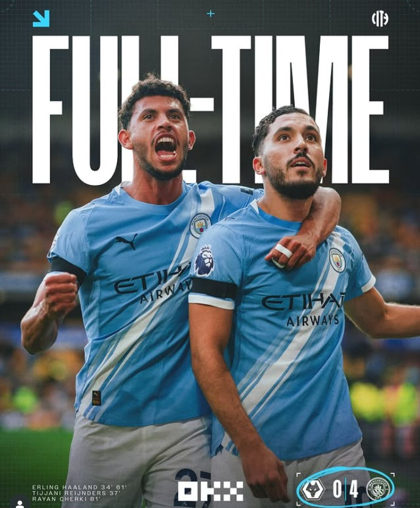
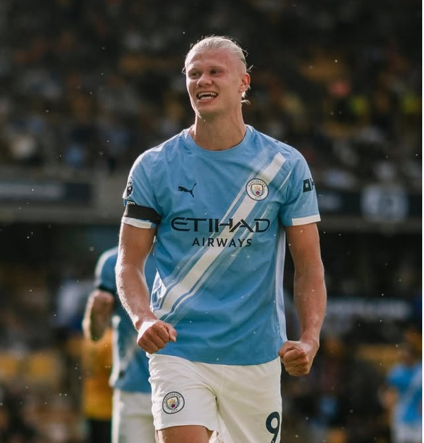
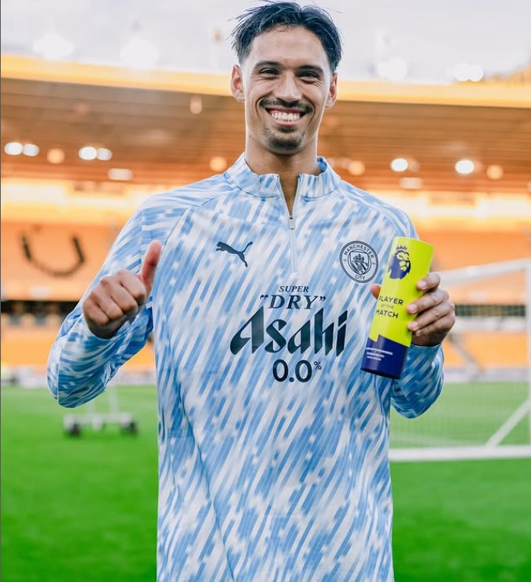
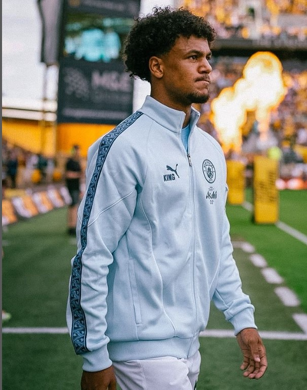

Man City FPL Assets Unlocked: Haaland Essential, Reijnders Rising, Lewis Bargain?
Manchester City’s 4–0 demolition of Wolves wasn’t just a footballing statement—it was an FPL earthquake. With prices freshly revealed, which players are worth jumping on and which are early-season traps? Here’s the lowdown.
⚡ Erling Haaland — The Undisputed Essential
Price: £14.0m | GW1 Points: 13
A brace, bonus points, and the same old story. Haaland is still the most reliable captain option in the game. Yes, he’s expensive, but there’s no FPL squad without him. The question isn’t “Haaland or no Haaland” — it’s who you pair him with.
🎯 Tijjani Reijnders — Budget Breakthrough
Price: £5.5m | GW1 Points: 10
A dream Premier League debut with a goal and an assist. Reijnders immediately looks like the perfect fifth midfielder. If his minutes remain stable, he could be the best enabler in the game this season.
✨ Oscar Bobb — Differential Delight
Price: £5.5m | GW1 Points: 6
Creative, lively, and already delivering points. Bobb is Pep roulette in human form, but at £5.5m he’s worth keeping an eye on. If he nails down a starting spot, he’s a golden differential.
🛡️ Defense — Rico Lewis Leads the Way
Rico Lewis (£5.0m, 11 pts) stood out at the back. Out-of-position in phases, cheap, and reliable so far. Aït-Nouri (£6.0m) also impressed, but feels slightly overpriced. Dias & Stones (both £5.5m) remain safe but unspectacular picks.
🚨 Risks & Traps
- Gvardiol (£6.0m) – flagged, wait and watch.
- Foden (£8.0m) – zero points GW1, upside remains but monitor minutes.
- Rodri / Kovačić – deep-lying roles, very low FPL ceiling.
✅ Verdict
Man City’s GW1 confirmed what we already knew: Haaland is essential. The real excitement lies in the new supporting cast — Reijnders as a bargain enabler, Lewis as a defensive value pick, and Bobb as a risky-but-fun differential.
FPL prices and points accurate as of Gameweek 1 (2025/26).